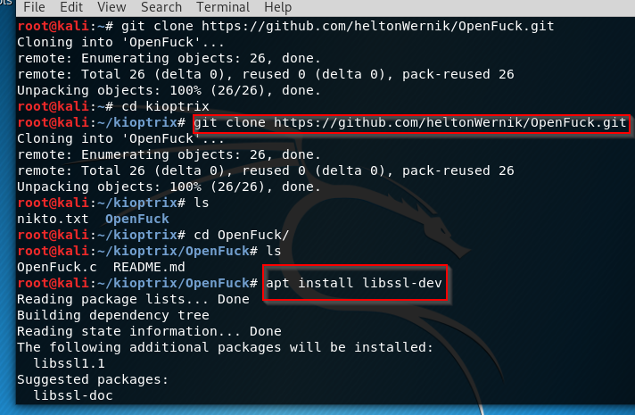

so we had a exploit(OpenFuck) for mod_ssl. https://github.com/heltonWernik/OpenLuck we'll go here and do exactly what it says.


green means that this file is executable.

as we see in here we need to specify the target and if we remember we know that target is running on apache 1.3.20

So there's two options you're going to find out that Metis flight is a more robust and popular option especially as a penetration tester. Now there is a common misconception or thought process put out there by certifications the OSCP for example doesn't let you use a lot of. So everybody thinks Man I really shouldn't use metasploit but you're going to see in this course how useful it really is and how robust it is and if you talk to a penetration tester they're going to use the best tools available to them. The certifications out there that do that are just making it harder to pass the exam intentionally than they are you know for practicality.
Pivoting
this has two nicks and we're on one network second user is on a second network that we never saw before then maybe we can do something called pivoting and move into that new network.
Post Explotataion
So well, what will we do after being root? we can go to the /etc/passwd file which is used to be password file now there is a x as placeholder in where supposed to be passwords. And actually passwords in /etc/shadow file.
Post-exploitation refers to any actions taken after a session is opened.

There's a lot of built in users here but if you always scroll down to the bottom and you start the five hundreds. That's where your user start. So there's actually two users in this computer as well one's named John. The other is named Harold.

/etc/shadow

independently from course, i cannot gain root because openfuck couldn't download a privesc file over kioptrix. So what i did is that i've downloaded the file to my machine and then i've served the file via python http server also i've changed the source code of openfuck to give right link which is my machine to download the file.
(https://blog.rootshellz.com/kioptrix-walkthrough-1/index.html)